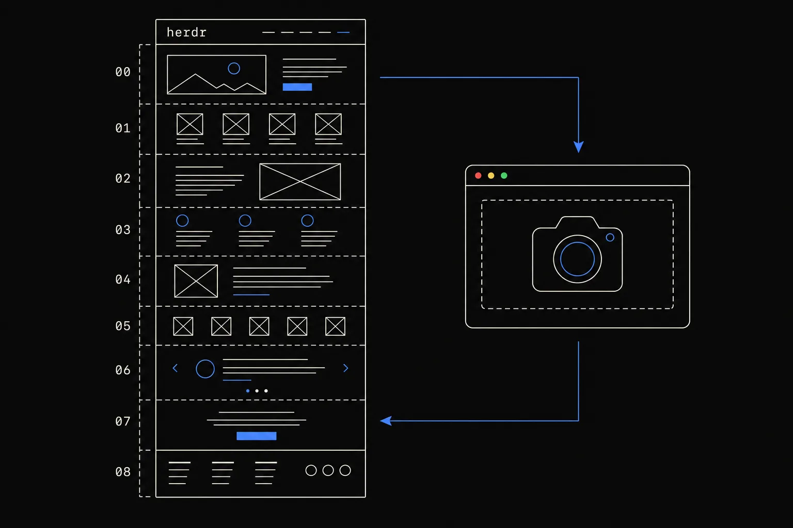
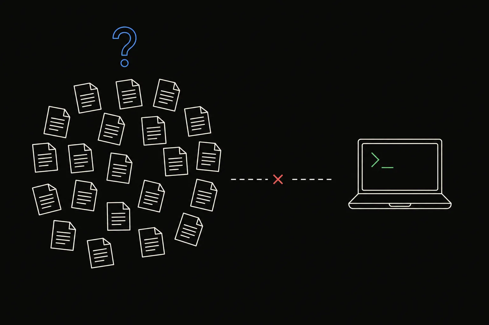
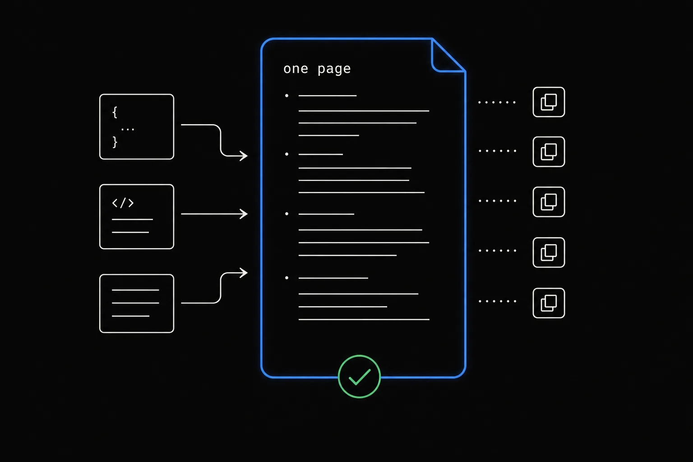
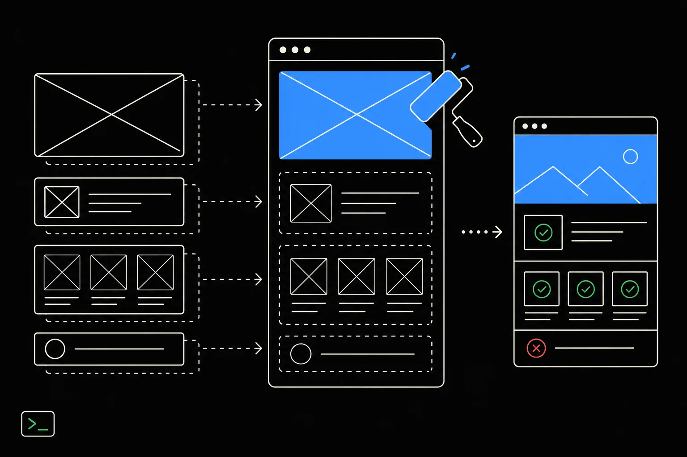
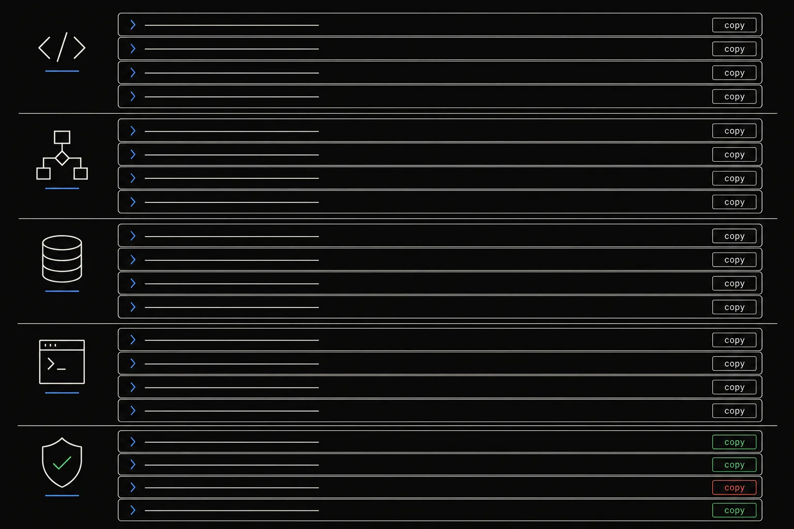
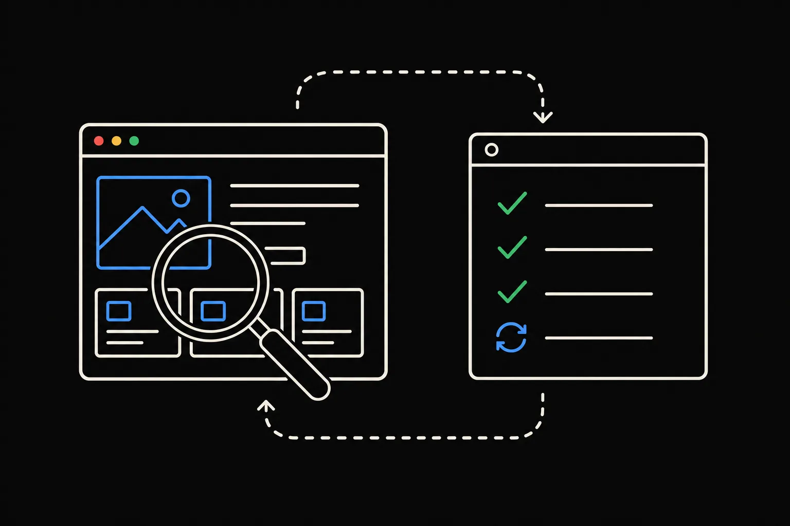

Plan: Herdr Guide — Run Them Anywhere, Leave Them Running

Purpose
Add a standalone HTML field guide for Herdr (herdr.dev — "the runtime coding agents run on", v0.8.2, Rust, Apache-2.0) to oh-my-html-docs, in the same "showcase everything the tool can do" style as the existing cmux-guide: a mental model, the control loop, agent states, a tiered library of copy-able orchestration prompts, the socket API, keyboard, integrations, and a comparison against tmux / cmux / Warp. Import it as a verbatim bundle + library card, and validate the render with playwright-cli.
Problem
Herdr's knowledge is spread over 21 docs pages, a README, a bundled SKILL.md, a compare page and a marketplace page. Someone deciding whether to run their agents on it — or an orchestrator agent trying to drive it — has no single page that shows the whole surface (CLI + socket + states + persistence + plugins) with runnable prompts. The repo's house style for exactly this kind of page exists (cmux-guide), but nothing covers Herdr.

Solution
One self-contained index.html (own CSS/JS, six generated .webp figures, one SVG favicon), rethemed from the cmux skeleton to Herdr's own "ink" identity (near-black ground, off-white text, herdr-blue #4a9eff accent, Archivo / Inter / JetBrains Mono). Nine sections: 00 Problem & Solution (flip cards) · 01 Mental Model · 02 Control Loop · 03 States & Notifications (with an HTML/CSS terminal mock) · 04 What Can Herdr Do? (30 prompts in 5 tiers + customization, each with a Copy button) · 05 Agentic Access (skill → CLI → socket) · 06 Keyboard · 07 Agents & Integrations · 08 Herdr vs tmux vs cmux vs Warp. Every command is cross-checked against the CLI reference and socket API docs. The bundle is imported under docs/pages/herdr-guide/ with a card at docs/library/guides/herdr-guide.md and a screenshot preview.

Relevant Files
Existing Files
- existing
docs/pages/cmux-guide/index.html— the house-style source: CSS skeleton (topbar-less hero, metastrip, toc, flip cards, tier/prompt rows, code blocks, matrix) and the copy-button / flip-card JS reused verbatim. - existing
docs/library/guides/cmux-guide.md— card front-matter shape to mirror (title, description, tags, category, html, source, added). - existing
docs/library/index.md— the Library landing page; gets one new bullet under guides. - existing
docs/assets/previews/*.png— 1200×750 card previews; the new one is captured with playwright-cli. - existing
specs/codex-cli-vs-claude-code.html+specs/codex-cli-vs-claude-code/doc/— precedent for keeping an authoring copy of the bundle beside the spec. - existing
mkdocs.yml,justfile,CLAUDE.md— strict build, lint, and the documented playwright-cli validation loop.
New Files
- new
docs/pages/herdr-guide/index.html— the verbatim bundle (the deliverable). - new
docs/pages/herdr-guide/images/{hero,model,loop,states,tiers,access}.webp,favicon.svg— figures generated to the synced identity, converted withcwebp -q 82. - new
docs/library/guides/herdr-guide.md— the card. - new
docs/assets/previews/herdr-guide.png— 1200×750 preview for the card. - new
specs/herdr-guide.html+specs/herdr-guide/*.webp— this spec and its images. - new
specs/herdr-guide/doc/— authoring copy of the bundle (identical todocs/pages/herdr-guide/).
Implementation Phases
IMPORTANT: Execute every phase and task step by step, in order, top to bottom.
Status markers: [] idle · [wip] in progress · [x] complete · [f] failed. This plan was built in the same session it was created in, so the markers below reflect the finished state (see Amendments).
[x] Phase 1: Research & Spec
Distill every herdr.dev docs page (fetched with curl, stripped of markup), the README, SKILL.md, the compare page and the marketplace page into a factual reference; author this spec; generate its images.
1. Gather facts
[x]Fetch/docs/index + all 20 subpages,/compare,/plugins, GitHub README andskills/herdr/SKILL.md; cache plain-text copies in the scratchpad.[x]Record version (0.8.2), protocol (20), licence, stats, full CLI command list, socket method families, config keys, keybindings, agent/integration tables, persistence matrix, compare matrix.[x]Extract the site's visual identity (ink palette,#4a9effaccent, Archivo / Inter / JetBrains Mono).
2. Author the spec
[x]Writespecs/herdr-guide.htmlfrom the planf3 template; fill metadata; no{{tokens left.[x]Generate hero / problem / solution / per-phase images withgenerate_gpt_image.py --size 1536x1024 --quality high, in parallel; convert to webp intospecs/herdr-guide/.
3. Testing Strategy
Static checks on the spec file itself.
[x]grep -c '{{' specs/herdr-guide.html— returns 0: every placeholder replaced.[x]open -a "Google Chrome" specs/herdr-guide.html— every figure renders.
[x] Phase 2: Scaffold & Theme
Copy the cmux CSS skeleton, swap the tokens to Herdr's ink/blue identity, build the hero, metastrip, TOC and section shells, and add one new component — a pure HTML/CSS terminal mock of the Herdr TUI.

1. Build the shell
[x]:roottokens:--bg #0c0c0b,--text #f0ece0,--accent #4a9eff,--ok #52c97a,--bad #e05a5a,--accent-2 #e6b84a; Google Fonts Archivo 600/800/900 + Inter + JetBrains Mono.[x]Hero: lowercase eyebrow, two-line H1 with blue second line, lede, install one-liner with a Copy button, hero figure.[x]Metastrip (version · runtime · agents detected · community) and a 9-entry TOC.[x]Terminal mock (.term): sidebar with spaces + agents and coloured state glyphs, tab bar, two panes (Claude Code working, a test watcher with await-outputmatch).[x]Reuse the copy-button + flip-card JS fromcmux-guide/index.html:929-1000; scope the prompt-text renderer to.prow .copy-btnso the hero Copy button stays a plain button.
2. Testing Strategy
Early screenshot loop with playwright-cli against a static server on docs/.
[x]python3 -m http.server -d docs 8765 &thenplaywright-cli open http://localhost:8765/pages/herdr-guide/index.html— page loads, title correct.[x]playwright-cli --raw eval "document.fonts …"— Archivo, Inter, JetBrains Mono all loaded.[x]playwright-cli screenshotat 1440×900 — hero, metastrip and TOC read as one system.
[x] Phase 3: Content & Prompt Library
Write sections 00–08 and the 30-prompt library. Every flag, method name, state name and config key is checked against the cached CLI reference, socket API, config reference and agent-automation pages — nothing invented.

1. Sections
[x]00 three flip cards: lid-closing → server/client; which-is-stuck → semantic states; agents-can't-drive → CLI/socket + skill.[x]01 Server / Session / Workspace / Worktree / Tab / Pane / Agent table with ID shapes and verbs; three ways to work (local, SSH,--remote).[x]02 the docs' reviewer recipe verbatim (pane split→agent start→agent prompt --wait→agent read→agent wait --until blocked→send-keys esc;pane run+wait-output --regex); control-surface table with error codes.[x]03 five-state table in the docs' wording; push-vs-poll table;[ui.toast]/[ui.sound]config; custom reporter callout.[x]04 30 prompts: Tier 1 Foundations (5) · Tier 2 One Agent (6) · Tier 3 Fleet (6) · Tier 4 Layouts & Metadata (5) · Tier 5 Persist & Remote (6) · Customization (2). Eachdata-promptuses only documented commands.[x]05 skill → CLI → socket layers, NDJSON request/response/error samples, method-family table, env vars, skill rules.[x]06 "learn these five first", full key grid, prefix-freectrl+altconfig sample, copy-mode keys.[x]07 agents ×--kind× authority × integration × resume table; integration/manifest commands; plugins / marketplace / Windows cards.[x]08 compare matrix condensed from herdr.dev/compare; three one-liners; "pairs with the cmux guide" callout.
2. Testing Strategy
DOM-level checks through playwright-cli: count, rendering, interaction.
[x]document.querySelectorAll('.prow').length === 30 && '.ptext' === 30— every prompt renders its text fromdata-prompt.[x]Click a.copy-btn→ text becomesCopied ✓and classcopiedis set.[x]Click a.flip-front→ the row gains.flippedand the green answer face is visible in a screenshot.[x]document.body.scrollWidth === innerWidthat 1440 and at 390 — no horizontal overflow.
[x] Phase 4: Figures
Six page figures generated to the synced identity, converted to webp, embedded with figcaptions.
1. Generate & embed
[x]hero(laptop lid → herdr server → three running terminals),model(nested workspace/tab/pane/agent),loop(run · read · wait · prompt),states(sidebar with the blocked row belled),tiers(five steps to a remote server),access(skill / cli / socket stack).[x]cwebp -q 82each PNG →docs/pages/herdr-guide/images/*.webp(14–28 KB each); remove PNG sources.[x]Hand-drawnfavicon.svg(ink square, blue "h", green working dot).
2. Testing Strategy
[x]playwright-cli --raw eval "JSON.stringify([...document.images].map(i => ({file: i.currentSrc.split('/').pop(), ok: i.complete && i.naturalWidth > 0})))"— all sixok: true.[x]Visual review of every PNG for identity match and legibility (fewer than 8 words per image).
[x] Phase 5: Import, Verify & Ship
Import the bundle, write the card, capture the preview, run the repo's strict build and lint, then the full playwright-cli validation loop from CLAUDE.md against the built site/.

1. Import
[x]Copyspecs/herdr-guide/doc/→docs/pages/herdr-guide/.[x]Writedocs/library/guides/herdr-guide.md(tagsherdr, agents, orchestration, terminal, categoryguides, added 2026-08-26) and the bullet indocs/library/index.md.[x]playwright-cli resize 1200 750+screenshot --filename=docs/assets/previews/herdr-guide.png.
2. Testing Strategy
The repo's own gates plus the CLAUDE.md render loop.
[x]just build— strict MkDocs build passes with zero warnings.[x]just lint— ruff + rumdl clean.[x]python3 -m http.server -d site 8766 &;playwright-cli goto http://localhost:8766/pages/herdr-guide/index.html— title, all images ok, console shows 0 errors.[x]playwright-cli goto http://localhost:8766/library/guides/herdr-guide/— "Open the document →" resolves to/pages/herdr-guide/and the preview image loads.[x]Screenshots at 1440 (sections 00, 01, 03 mock, 05, 06, 08, a prompt row) and 390 (hero, mock, flip cards, layers) reviewed by eye.
Validation Commands
Execute these commands to validate the entire plan is complete:
[x]just build— strict build, no warnings.[x]just lint— ruff + rumdl clean.[x]grep -c '{{' specs/herdr-guide.html— 0.[x]diff -r specs/herdr-guide/doc docs/pages/herdr-guide— authoring copy and bundle identical.[x]playwright-cliloop from CLAUDE.md — page title correct, every imageok: true, console clean, card button resolves.[x]playwright-cli --raw eval "document.body.scrollWidth === innerWidth"at 1440 and 390 — true.
Notes
Decisions
- Identity: Herdr's, not cmux's. The cmux guide is gold-on-black; this one is herdr-blue on ink so the two guides read as siblings in structure but each carries its subject's brand. Archivo is herdr.dev's own display face.
- Prompts assume the skill. Every prompt is written for an agent running inside a Herdr pane with the bundled skill loaded (
HERDR_ENV=1), matching how herdr.dev expects agents to drive it. No live Herdr install was required to author them; each command was validated against the docs text. - No
herdr eventsCLI. Event subscription exists only on the socket (events.subscribe/events.wait); the page routes CLI-level waiting throughagent wait/pane wait-outputand shows the socket form separately. - Terminal mock is HTML, not an image, so it stays crisp, copyable and cheap, and demonstrates the state glyph colours directly.
- The hero Copy button shares the copy JS but is excluded from the prompt-text renderer (selector
.prow .copy-btn).
Bugs caught by the playwright loop
| Symptom | Cause | Fix |
|---|---|---|
body.scrollWidth 2115 at 1440 wide; Tier 3 rows blown out | \" inside data-prompt attributes (JS-style escape, not HTML) terminated the attribute early | Replace with " (8 occurrences) |
| 450 px wide at a 390 viewport | Long unbreakable tokens (paths, npx skills add …) inside .ptext and .layer .ld | overflow-wrap:anywhere + min-width:0 on the grid/flex children |
| Strict build failed | Card referenced assets/previews/herdr-guide.png before it was captured | Capture the preview from the verbatim page served straight from docs/, then build |
Source material
- herdr.dev: home,
/docs/+ quick-start, install, concepts, how-to-work, agents, agent-automation, agent-skill, session-state, persistence-remote, socket-api, cli-reference, config-reference, configuration, keyboard, plugins, marketplace, integrations, troubleshooting, windows-beta;/compare;/plugins. - GitHub
herdrdev/herdrREADME andskills/herdr/SKILL.md;herdr.dev/latest.json(version 0.8.2, protocol 20).
Future work
- Re-run the prompt library against a live Herdr install and record which prompts need per-version tweaks (e.g. the
-m gpt-5.4Codex argument from the docs). - A light "paper" theme toggle, mirroring herdr.dev's ink/paper ground.
- When herdr.dev ships the "where do agents run while you sleep?" feature (05 on the homepage, redacted), add a Tier 5 prompt for it.
Amendments
2026-08-26T13:23:00Z — Built in the same session as created
The Create Plan and Build Plan workflows ran back-to-back in one session (planf3 invoked from plan mode, plan approved, then executed). All phase and validation markers were set to [x] once the corresponding commands passed; the three bugs found by the playwright loop are recorded under Notes.